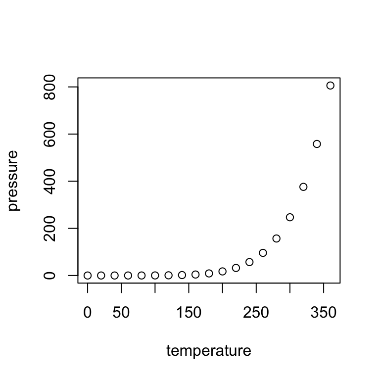

Introduction to R Markdown
2/8/23
What is R Markdown?
- Markdown is a purposefully simple language that allows users to write and format text with a plain-text editor.
- Pandoc is a package created to convert Markdown documents to a wide range of outputs (e.g. Word, PDF, HTML, etc.).
- It also significantly broadened the Markdown syntax to allow for inclusion of tables, footnotes, math expressions, citations, and more.
- The
knitrpackage first introduced the R Markdown document to make it easier embed R code directly into markdown documents.

- You can read more about this process here.
- The
rmarkdownpackage expanded what can be done withmarkdowndocuments, which now includes:- Compiling an R Markdown document into many different formats
- Creating notebooks where you can directly run code chunks interactively
- Making slides for presentations (like this one!) in a range of formats (HTML5, LaTeX Beamer, or Powerpoint)
- Producing dashboards with flexible, interactive, and attractive layouts
- Building interactive applications with Shiny
- Writing journal articles
- Authoring book chapters or entire books
- Generating websites and/or blogs
Installations
First things first, you’ll need to install R and RStudio (highly recommended).
If you are not using R Studio you’ll need to install Pandoc as well (R Studio users - this is already bundled in).
If you want to create PDFs you’ll also need to download LaTeX. The easiest way to do this is installing TinyTex.
Creating a Markdown document
- Choose File > New File > R Markdown….
- Keep Document highlighted on the left-hand side, make sure HTML Output is selected, and click OK
- Save your file and name it
CSSCR_markdown_workshop.Rmd - Click the Knit icon (blue ball of yarn)
- See your freshly rendered HTML document appear in the preview window
*You may notice a new Render tab appear in the Console pane - this is knitr (and Pandoc) working behind the scenes to compile your final document.
R Markdown Structure
YAML metadata (aka document header)
- A note on customization
Document body and narrative elements
- In-line code
- Document structure
- Formatting
- External references
- Math and equation syntax
Code chunks and chunk options
YAML metadata
YAML (YAML Ain’t Markup Language) is the header of a markdown document and is everything contained between the first pair of three dashes.
A basic example looks like this:
You can customize many different features of your documents here. Here are some examples for HTML.
A Note on Customization
- Part of the appeal of markdown is its simplicity and human readability.
- Adding more bells and whistles will expand the types of documents you can produce and their customizability but will also require learning new languages/systems/etc.
For day-to-day use, standard R Markdown works great and with some simple, basic tweaks you can make some nice looking documents.
For more information on ways to customize, see links below.
- Ready-made templates with the
prettydocspackage- See more built-in themes and well as ones from other packages here
- Applying journal-specific templates with
rticles - Using HTML and CSS for custom formatting
- Making tailored PDF files with LaTeX
Document body and narrative elements
- The narrative elements of a markdown document includes the written portion of your reports/articles/homework assignments.
- An advantage of R Markdown documents is that these narrative elements can directly reference code, eliminating the need to copy and paste R output/results, thereby reducing potentials for error and making your work reproducible.
In-line code
This so-called in-line code works by putting the code you want to evaluate within single backticks that begin with an r (i.e. `r `)
For example, if you write the following in your markdown document:
Four score and seven years ago is the same as `r 4*20 + 7` years ago.
it will produce the following when knitted to your output document:
Four score and seven years ago is the same as 87 years ago.
You can directly reference this like so:
The value of x rounded to the nearest two decimals is`r round(x, 2)`.
which will look like this:
The value of x rounded to the nearest two decimals is 8.77.
Document structure
Formatting the structure of your document is controlled within this narrative element as well. For example:
Syntax
# Heading
## Subheading
### Subsubheading
Output
Heading
Subheading
Subsubheading
Formatting
Output
bold/strong emphasis
italic/normal emphasis
Block quote from famous person
- Ordered lists
- will even correct
- your numbering
- mistakes
- Unordered lists
- are also pretty
- easy to do
External references
Syntax
[URL link](http://www.uw.edu)


Math and equation syntax
Syntax
You can put some math $y= \left(\frac{2}{3} \right)^2$ directly in a sentence
or centered within your document: $$\frac{1}{n} \sum_{i=1}^{n} x_i = \bar{x}_n$$
Or a sentence with `code-looking font.`
Or a block of code:
```
y <- 1:5
z <- y^2
```
Output
You can put some math \(y= \left( \frac{2}{3} \right)^2\) directly in a sentence.
or centered within your document: \[\frac{1}{n} \sum_{i=1}^{n} x_i = \bar{x}_n\]
Or a sentence with code-looking font.
Or a block of code:
y <- 1:5
z <- y^2
Code chunks
Sections of code within an R Markdown document are called code chunks. Code is sandwiched between two sets of three backticks and an {r}. For example, this code chunk:
```{r}
summary(cars)
```
Code chunk options
Chunks have various options to control what happens with the code and output. Some basics include:
echo = FALSE: Suppresses the actual R code itself from being shown in the documenteval = FALSE: Does not run the R code at allincludes = FALSE: Hides all output (code, messages, etc.) but still runs code. This is a good option forsetupchunks where data, packages, and global settings are set.results = 'hide': Hides R’s (non-plot) output from the documentmessage = FALSE: Hides messages generated by code from appearing in finished document.warning = FALSE: Hides warning messages generated by code from appearing in finished document.cache = TRUE= Saves results of that chunk so it does not have to rerun the code with each subsequent re-knit (helpful with chunks that are very time-intensive)fig.height = 5, fig.width = 5: modify the dimensions of any plots generated by a chunk (units are in inches by default)fig.cap = "Figure caption": An optional caption provided to the figure produced within a chunk.
Code chunk example
Here’s an example chunk with options
```{r pressure, echo = FALSE, fig.dim = c(3,3), fig.cap = "Pressure plot"}
plot(pressure)
knitr::kable(summary(pressure), caption = "Table with Kable")
```
And this is what the output looks like:

| temperature | pressure | |
|---|---|---|
| Min. : 0 | Min. : 0.0002 | |
| 1st Qu.: 90 | 1st Qu.: 0.1800 | |
| Median :180 | Median : 8.8000 | |
| Mean :180 | Mean :124.3367 | |
| 3rd Qu.:270 | 3rd Qu.:126.5000 | |
| Max. :360 | Max. :806.0000 |
Cheatsheet
Posit (formerly R Studio) provides cheatsheets for a number of packages, including R Markdown. You can downloaded the pdf here here
Resources
Basics and general reference guides:
Going even further:
- Including citations and bibliographies
- Extending kable() with kableExtra package
- Advanced presentations with xaringan and reveal.js
- Sharing on Short Notice: How to Get Your Materials Online With R Markdown